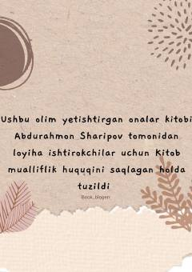

OYBuyuk daholarni voyaga yetkazgan onalar haqida ilhomli hikoyalar.
Bu kitob buyuk olimlar va daholarni voyaga yetkazgan onalar haqida ilhomli hikoyalarni o'z ichiga oladi. Muallif Murat Tosunning asari Abdurahmon Sharipov tomonidan o'zbek tiliga moslashtirilgan. Kitobda Tomas Edison va uning qahramonona onasi kabi tarixiy misollar orqali onaning farzand tarbiyasidagi beqiyos roli yoritiladi.